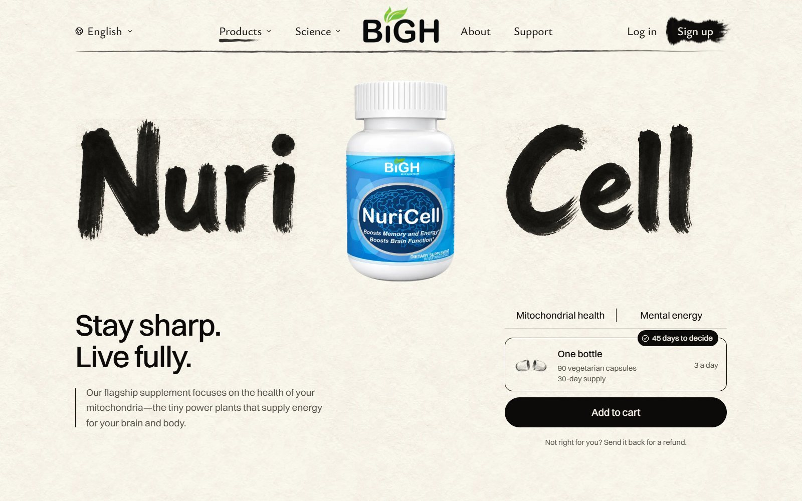
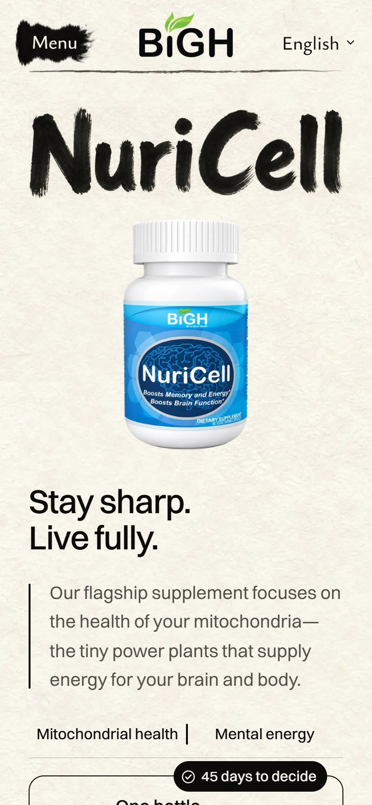
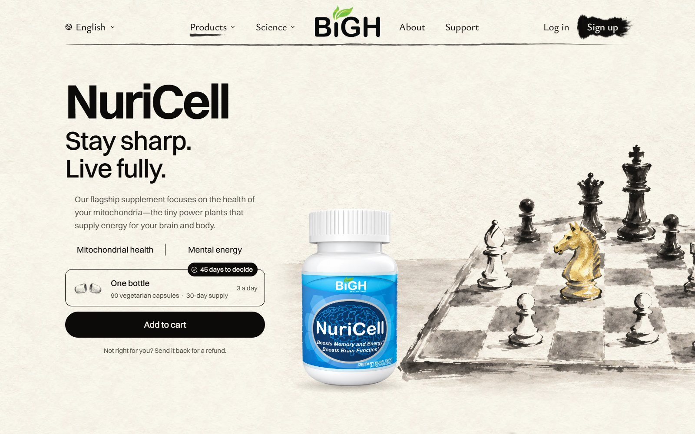
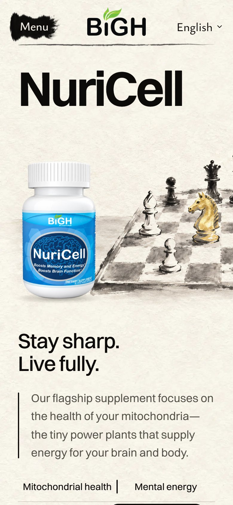
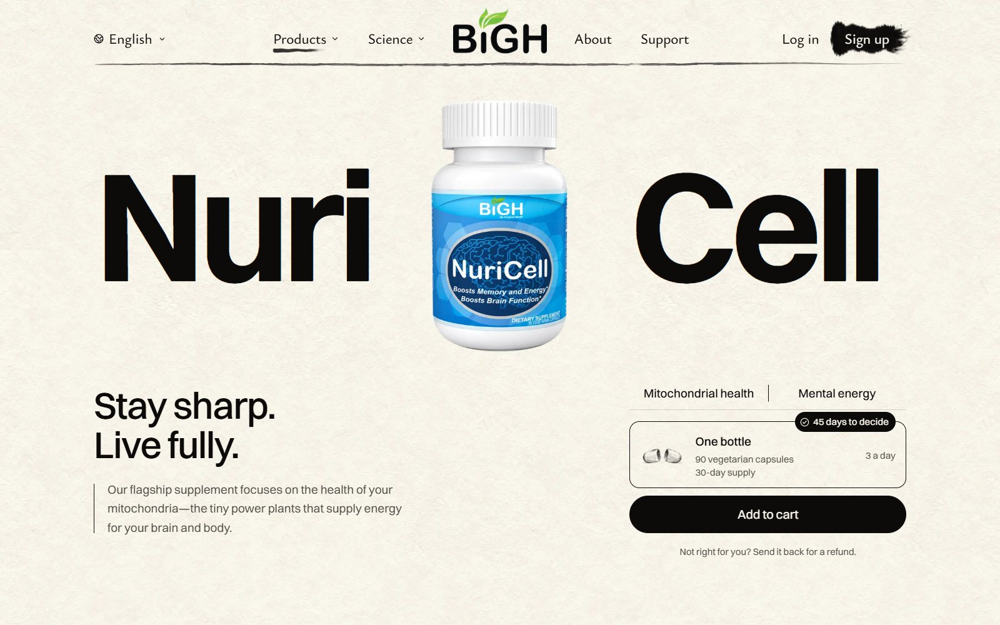
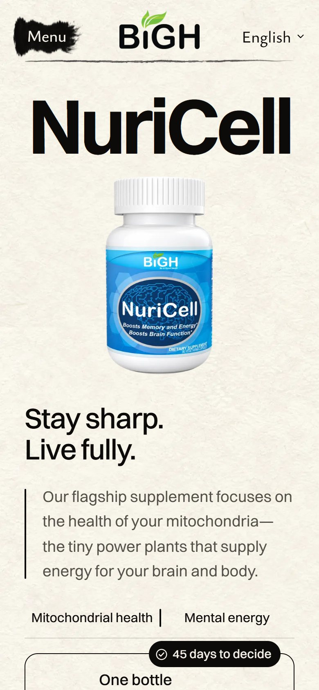

<title>NuriCell Opening Ideas</title>
<meta name="claude:viewport-fit-sides" content="cover">
<link rel="preconnect" href="https://fonts.googleapis.com">
<link rel="preconnect" href="https://fonts.gstatic.com" crossorigin>
<link rel="stylesheet" href="https://fonts.googleapis.com/css2?family=Ysabeau:wght@500;600&display=swap">
<style>
  /* Layout: one column of choices, each a desktop shot with its phone shot beside it (stacked on a phone). */
  :root {
    --paper: #f6f1e6;
    --sheet: #fbf8f1;
    --ink: #1b1915;
    --ink-soft: #5a554c;
    --rule: #d9d1c1;
    --gold: #a07a2c;
    --title: "Ysabeau", "Iowan Old Style", Georgia, serif;
    --body: -apple-system, "Segoe UI", system-ui, sans-serif;
  }
  @media (prefers-color-scheme: dark) {
    :root:not([data-theme="light"]) {
      --paper: #1d1b17; --sheet: #26231e; --ink: #f1ece2; --ink-soft: #b9b1a3; --rule: #3b372f; --gold: #d2aa5a;
      color-scheme: dark;
    }
  }
  :root[data-theme="dark"] {
    --paper: #1d1b17; --sheet: #26231e; --ink: #f1ece2; --ink-soft: #b9b1a3; --rule: #3b372f; --gold: #d2aa5a;
    color-scheme: dark;
  }
  body {
    background: var(--paper);
    color: var(--ink);
    font: 17px/1.55 var(--body);
  }
  main {
    max-width: 1120px;
    margin: 0 auto;
    padding-block: 40px 72px;
    padding-left: max(16px, env(safe-area-inset-left, 0px));
    padding-right: max(16px, env(safe-area-inset-right, 0px));
    display: grid;
    gap: 56px;
  }
  h1, h2 { font-family: var(--title); font-weight: 600; letter-spacing: -0.01em; text-wrap: balance; margin: 0; }
  h1 { font-size: clamp(34px, 6vw, 56px); line-height: 1.05; }
  h2 { font-size: clamp(28px, 4vw, 40px); line-height: 1.1; }
  .lede { display: grid; gap: 14px; max-width: 40em; }
  .lede p, .choice p { margin: 0; }
  .kicker { color: var(--ink-soft); font-size: 15px; letter-spacing: 0.02em; }
  .pick {
    border-left: 3px solid var(--gold);
    padding: 4px 0 4px 14px;
    font-size: 18px;
  }
  .choice { display: grid; gap: 18px; padding-top: 28px; border-top: 1px solid var(--rule); }
  .head { display: flex; align-items: baseline; gap: 14px; flex-wrap: wrap; }
  .tag {
    font-family: var(--title); font-weight: 600; font-size: clamp(40px, 6vw, 56px); line-height: 1;
    color: var(--gold); min-width: 0.8em;
  }
  .score { font-variant-numeric: tabular-nums; color: var(--ink-soft); font-size: 16px; }
  ul { margin: 0; padding-left: 1.1em; display: grid; gap: 6px; max-width: 44em; }
  li::marker { color: var(--gold); }
  .shots { display: grid; grid-template-columns: 3.2fr 1fr; gap: 16px; align-items: start; }
  figure { margin: 0; display: grid; gap: 6px; min-width: 0; }
  figure a { display: block; }
  figure img {
    display: block; width: 100%; height: auto; max-width: 100%;
    border: 1px solid var(--rule); border-radius: 6px; background: var(--sheet);
  }
  figcaption { font-size: 14px; color: var(--ink-soft); }
  .foot { display: grid; gap: 10px; color: var(--ink-soft); font-size: 15px; border-top: 1px solid var(--rule); padding-top: 24px; }
  .foot p { margin: 0; max-width: 46em; }
  a { color: inherit; }
  a:focus-visible { outline: 2px solid var(--gold); outline-offset: 3px; }
  @media (max-width: 720px) {
    body { font-size: 16px; }
    main { gap: 44px; padding-block: 28px 56px; }
    .shots { grid-template-columns: 1fr; }
    .shots figure.phone { max-width: 300px; justify-self: center; width: 100%; }
  }
</style>

<main>
  <header class="lede">
    <p class="kicker">BiGH · NuriCell page · first screen · October 23, 2026</p>
    <h1>Two new ideas for NuriCell's opening</h1>
    <p>Real screenshots of the live page with each idea laid in by the browser. Nothing on the site has changed.</p>
    <p class="pick"><strong>My pick: B.</strong> It gives the one screen with no painting a painting of its own.</p>
  </header>

  <section class="choice" aria-labelledby="a-title">
    <div class="head"><span class="tag">A</span><h2 id="a-title">Written by hand</h2><span class="score">8 / 10</span></div>
    <ul>
      <li>Same layout you approved. Only the name changes: brushed in ink instead of typed.</li>
      <li>As the page opens, the name could write itself in, left to right.</li>
      <li>Holds it back: the brush letters lean a little casual, like a hand-painted sign.</li>
    </ul>
    <div class="shots">
      <figure>
        <a href="a-desktop.jpg"></a>
        <figcaption>Laptop, 1600 wide</figcaption>
      </figure>
      <figure class="phone">
        <a href="a-phone.jpg"></a>
        <figcaption>Phone</figcaption>
      </figure>
    </div>
  </section>

  <section class="choice" aria-labelledby="b-title">
    <div class="head"><span class="tag">B</span><h2 id="b-title">The next move</h2><span class="score">8.5 / 10</span></div>
    <ul>
      <li>A painted chess game in mid-play. The real bottle stands on the table beside it.</li>
      <li>One knight is gold leaf: the next move. It says "a sharp mind" without a word.</li>
      <li>Words and Add to cart sit on the left, all on the first screen.</li>
      <li>Holds it back: chess is a familiar "brain" symbol, and the bottle stands big next to the pieces.</li>
    </ul>
    <div class="shots">
      <figure>
        <a href="b-desktop.jpg"></a>
        <figcaption>Laptop, 1600 wide</figcaption>
      </figure>
      <figure class="phone">
        <a href="b-phone.jpg"></a>
        <figcaption>Phone</figcaption>
      </figure>
    </div>
  </section>

  <section class="choice" aria-labelledby="now-title">
    <div class="head"><span class="tag">·</span><h2 id="now-title">Today, for comparison</h2></div>
    <div class="shots">
      <figure>
        <a href="now-desktop.jpg"></a>
        <figcaption>Laptop, 1600 wide</figcaption>
      </figure>
      <figure class="phone">
        <a href="now-phone.jpg"></a>
        <figcaption>Phone</figcaption>
      </figure>
    </div>
  </section>

  <footer class="foot">
    <p><strong>Also tried, left out:</strong> "Stay sharp." and "Live fully." as the big words round the bottle. It read like a greeting card (6.5 / 10).</p>
    <p>Paintings made by Codex on your ChatGPT plan. No extra spending.</p>
    <p>Reply A, B, keep today, or tell me what to change.</p>
  </footer>
</main>
